Лабораторная работа №2¶
Доска домашних заданий¶
Во второй работе реализован сайт для хранения домашних заданий, пользователей и сдач. Работа на Go.
Практика 2.1. Проект, модели и первые страницы¶
Task 1. Создание и запуск проекта¶
Проект находится в laboratory_work_2. Его основные файлы:
laboratory_work_2/
├── cmd/server/main.go
├── internal/
│ ├── app/
│ │ ├── models.go
│ │ ├── repository.go
│ │ ├── repository_postgres.go
│ │ ├── views.go
│ │ ├── urls.go
│ │ ├── admin.go
│ │ └── auth.go
│ └── database/postgres.go
├── migrations/
│ ├── 001_init.up.sql
│ ├── 001_init.down.sql
│ ├── 002_extend_users.up.sql
│ └── 002_extend_users.down.sql
├── web/templates/
├── go.mod
└── go.sum
Перед запуском нужна PostgreSQL с миграциями и локальный файл .env. Пример его формата значениями:
DATABASE_DSN="host=localhost user=lab_user password=d_password dbname=lab2 port=5432 sslmode=disable"
В main.go конфигурация читается так:
err := godotenv.Load()
dsn := os.Getenv("DATABASE_DSN")
db, err := database.NewPostgres(dsn)
В текущем коде ошибка загрузки .env останавливает запуск. Значит, файл должен существовать даже при использовании переменных окружения.
Подключение создаётся в internal/database/postgres.go:
dialector := postgres.Open(dsn)
db, err := gorm.Open(dialector, &gorm.Config{})
sqlDB, err := db.DB()
err = sqlDB.Ping()
gorm.Open создаёт объект ORM. Через db.DB() получается нижележащий *sql.DB, чтобы проверить доступность PostgreSQL методом Ping.
После этого создаются репозитории, обработчики и маршрутизатор. Сервер слушает 127.0.0.1:8080; список заданий открывается по адресу http://127.0.0.1:8080/homeworks. Для / отдельного маршрута нет.
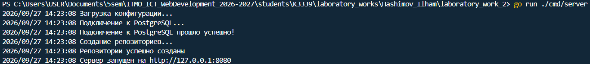
Общий путь запроса:
Браузер → ServeMux → обработчик → репозиторий → PostgreSQL
↓
html/template → HTML в браузер
Task 2.1. Модель данных¶
В internal/app/models.go описаны три структуры: User, Homework и Submission.
| Модель | Основные поля | Для чего используется |
|---|---|---|
User |
ID, Username, PasswordHash, IsAdmin, ClassName |
Пользователь и его роль |
Homework |
TeacherID, Subject, Text, Penalty, даты |
Домашнее задание |
Submission |
StudentID, HomeworkID, Text, SubmittedAt, Grade |
Сдача конкретного задания |
Например, домашнее задание описано так:
type Homework struct {
ID int64
TeacherID int64
Subject string
Text string
Penalty string
IssueDate time.Time
StartDate time.Time
EndDate time.Time
}
struct в данном случае играет роль модели с полями.
По соглашениям GORM структура Homework соответствует таблице homeworks, а поле TeacherID колонке teacher_id. Структуры описывают данные в программе.
Связи имеют вид:
users.id ──< homeworks.teacher_id
users.id ──< submissions.student_id
homeworks.id ──< submissions.homework_id
Один пользователь может быть указан преподавателем у нескольких заданий. У задания может быть несколько сдач, а пользователь может сдавать разные задания.
В Submission оценка объявлена как указатель:
Grade *float64
nil означает, что оценки пока нет. Это отличается от оценки 0; в PostgreSQL отсутствие оценки хранится как NULL.
Task 2.2. Миграции¶
Первая миграция 001_init.up.sql создаёт таблицы users, homeworks и submissions. Например:
CREATE TABLE submissions (
id BIGSERIAL PRIMARY KEY,
student_id BIGINT NOT NULL,
homework_id BIGINT NOT NULL,
text TEXT NOT NULL,
submitted_at TIMESTAMP NOT NULL,
grade DOUBLE PRECISION,
FOREIGN KEY (student_id) REFERENCES users(id),
FOREIGN KEY (homework_id) REFERENCES homeworks(id)
);
В отличие от makemigrations, SQL здесь написан вручную. В приложении нет AutoMigrate и автоматического запуска этих файлов. Для новой базы последовательно применяются 001_init.up.sql, затем 002_extend_users.up.sql через используемый SQL-клиент или инструмент миграций.
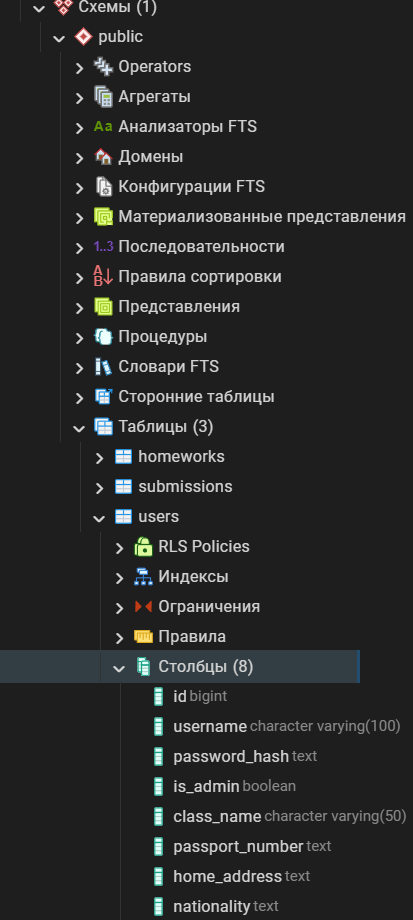
Репозиторий и запросы к БД¶
Обработчики обращаются к интерфейсу репозитория. Например:
type UserRepository interface {
Create(ctx context.Context, user User) (int64, error)
GetByID(ctx context.Context, id int64) (User, error)
GetByUsername(ctx context.Context, username string) (User, error)
GetAll(ctx context.Context) ([]User, error)
}
Интерфейс перечисляет доступные операции. Реализация с PostgreSQL хранит *gorm.DB и выполняет запросы:
result := r.db.WithContext(ctx).Create(&user)
result := r.db.WithContext(ctx).First(&user, id)
result := r.db.WithContext(ctx).Find(&users)
Знак & передаёт адрес переменной, чтобы GORM мог заполнить её данными. Вместо исключения запрос возвращает ошибку в result.Error. r.Context() передаёт контекст текущего HTTP-запроса в запрос к БД.
Task 3. Панель администратора¶
Панель находится по адресу /admin. В ней есть списки и формы создания пользователей, домашних заданий и сдач.
В Django эти страницы предоставляет встроенная админка. Здесь они написаны в admin.go, поэтому каждая операция подключается отдельным маршрутом и шаблоном.
Например, список пользователей получает данные и передаёт их в шаблон:
users, err := v.userRepo.GetAll(r.Context())
tmpl, err := template.ParseFiles("web/templates/admin/users.html")
err = tmpl.Execute(w, users)
Первый администратор должен уже находиться в БД. Отдельной команды createsuperuser нет.
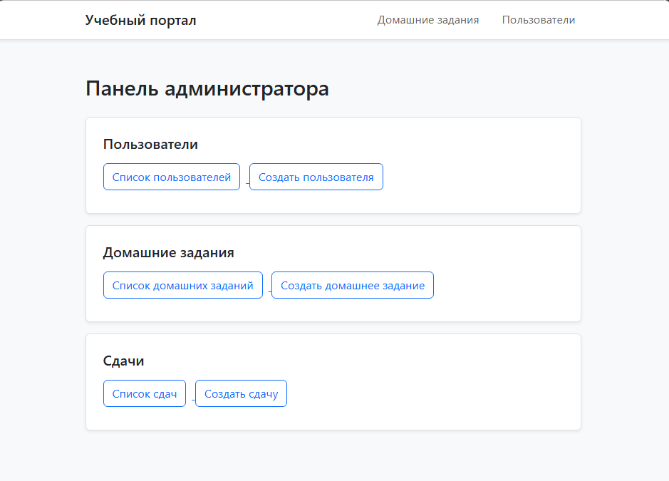
Task 4. Страница объекта по ID¶
В HomeworkView.Detail идентификатор берётся из адреса:
idStr := r.PathValue("id")
id, err := strconv.ParseInt(idStr, 10, 64)
homework, err := v.repo.GetByID(r.Context(), id)
Для /homework/1 строка idStr равна "1". ParseInt переводит её в int64. Если ID некорректный, возвращается HTTP 400; если запись не найдена 404.
В шаблон передаётся структура с заданием и текущим пользователем:
data := HomeworkPageData{
Homework: homework,
User: user,
IsLogged: isLogged,
}
err = tmpl.Execute(w, data)
В HTML к этим данным обращаются так:
<h1>{{ .Homework.Subject }}</h1>
<p><b>Описание:</b> {{ .Homework.Text }}</p>
Точка это переданные в Execute данные. html/template подставляет значения и экранирует обычный текст с учётом HTML-контекста. Это Go-шаблонизатор.
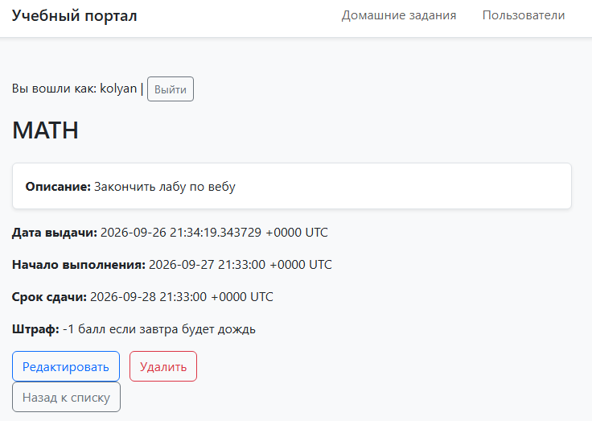
Task 5. Маршруты¶
В urls.go адрес связывается с обработчиком:
mux := http.NewServeMux()
mux.HandleFunc("GET /homework/{id}", homeworkView.Detail)
mux.HandleFunc("GET /homeworks", homeworkView.List)
В шаблоне маршрута указаны HTTP-метод и параметр {id}, который затем читается через r.PathValue.
Маршрутизатор передаётся в http.Serve(listener, router) в main.go. общий маршрутизатор создаётся функцией NewRouter.
Практика 2.2. Связи, списки и CRUD¶
Task 1. Промежуточная модель¶
Submission связывает пользователя и домашнее задание. У этой связи есть собственные данные: текст ответа, время сдачи и оценка.
type Submission struct {
ID int64
StudentID int64
HomeworkID int64
Text string
SubmittedAt time.Time
Grade *float64
}
По назначению это соответствует промежуточной модели through из Django: связь хранится в отдельной таблице вместе со своими полями. В Go-проекте внешние ключи заданы в SQL, а не через ManyToManyField или ассоциации GORM.
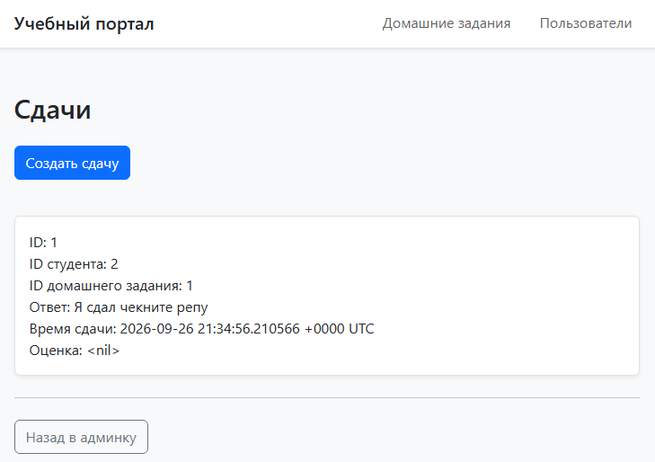
Task 2. Список пользователей и заданий¶
Вывод списка пользователей устроен так же, как список в админке: GetAll → ParseFiles → Execute. Отличаются шаблон web/templates/users.html и адрес /users.
В шаблоне список перебирается через range:
{{ range . }}
<p>
ID: {{ .ID }}<br>
Username: {{ .Username }}<br>
Класс: {{ .ClassName }}
</p>
{{ end }}
Внутри range точка означает текущего пользователя, а не весь список.
У заданий есть список /homeworks и отдельная страница /homework/{id}. В списке используются пагинация и фильтрация они разобраны ниже, поэтому второй раз весь обработчик не приводится.
Обработчик-метод и CBV¶
В методичке отдельно рассматриваются FBV и CBV. В Go HTTP-обработчик принимает http.ResponseWriter и *http.Request. ResponseWriter нужен для ответа клиенту, Request содержит запрос.
Обработчики проекта оформлены методами структур:
type HomeworkView struct {
repo HomeworkRepository
auth *Auth
}
func (v *HomeworkView) Detail(w http.ResponseWriter, r *http.Request) {
// Получение задания и вывод шаблона.
}
(v *HomeworkView) он получатель метода. Через него обработчик получает доступ к репозиторию и авторизации. Это позволяет собрать связанные действия в одном типе. чтение запроса, проверки и сохранение написаны явно.
Методы UserView.List и UserView.Create тоже имеют получателя. Поэтому отдельной реализации списка и создания пользователя как свободных функций, буквально соответствующей требованию FBV, в текущем коде нет.
Task 3. Создание пользователя¶
Один адрес обслуживает два действия:
mux.HandleFunc("GET /users/create", userView.Create)
mux.HandleFunc("POST /users/create", userView.Create)
При GET показывается форма, при POST читаются значения и создаётся запись:
err := r.ParseForm()
username := r.FormValue("username")
password := r.FormValue("password")
className := r.FormValue("class_name")
Значение name у HTML-поля должно совпадать с аргументом FormValue.
Обычная форма задаёт IsAdmin: false. В админ форме дополнительно читается флажок:
isAdmin := r.FormValue("is_admin") == "on"
Доступ к админ форме проверяется на сервере. Остальные поля сохраняются тем же методом UserRepository.Create; повторять его реализацию для админки не нужно.
Создание домашнего задания¶
Администратор открывает /homeworks/create. Форма передаёт предмет, ID преподавателя, даты, описание и штраф.
Число и даты преобразуются из строк:
teacherID, err := strconv.ParseInt(teacherIDStr, 10, 64)
startDate, err := time.Parse("2006-01-02T15:04", startDateStr)
endDate, err := time.Parse("2006-01-02T15:04", endDateStr)
В Go формат даты записывается через специальную дату 2006-01-02T15:04
Дата публикации задаётся через time.Now(). Запись сохраняется методом Create, после чего сервер перенаправляет браузер на список:
http.Redirect(w, r, "/homeworks", http.StatusSeeOther)
StatusSeeOther ответ 303. Браузер после POST выполняет GET списка, поэтому обновление открывшейся страницы не повторяет отправку формы.
Ниже видно так же что работет пагинация.
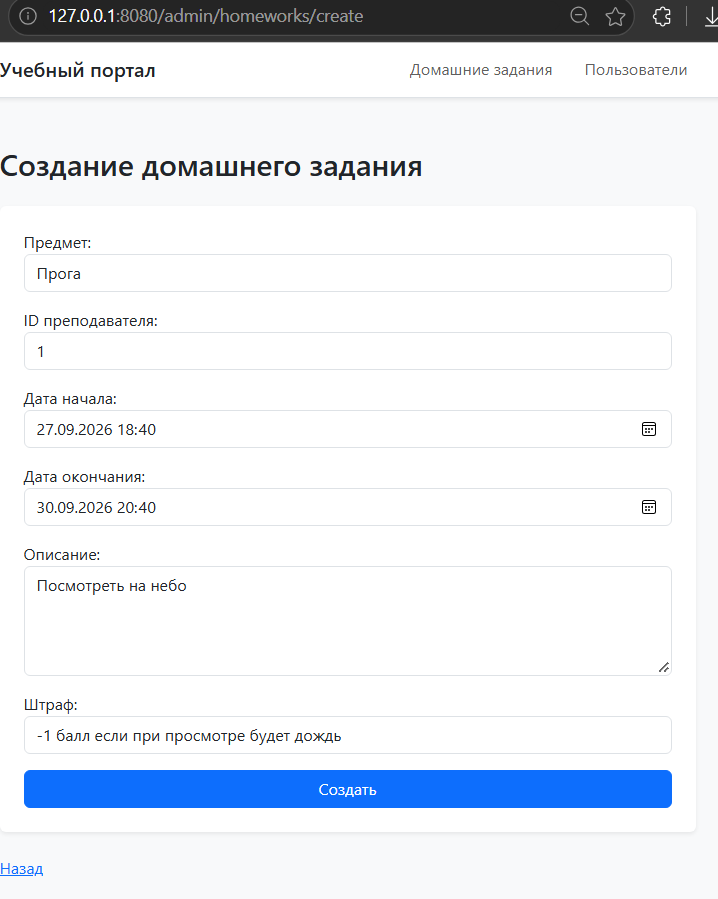
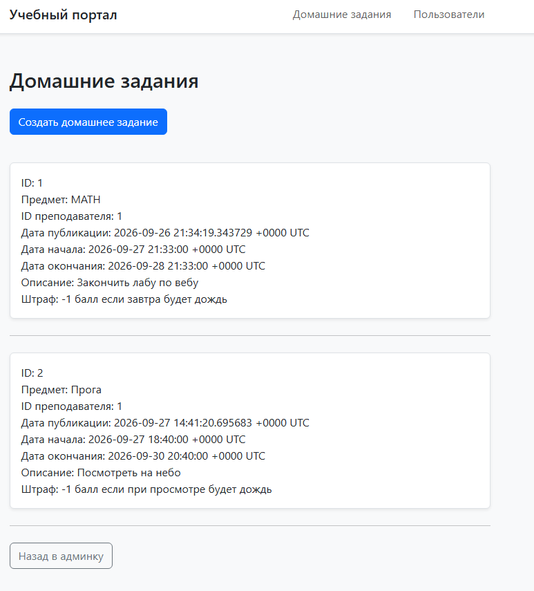
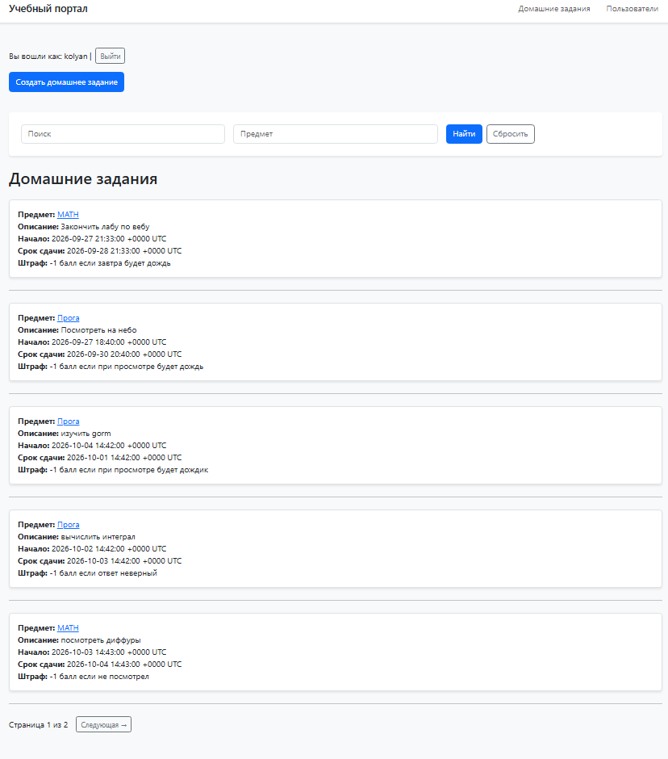
Обновление домашнего задания¶
/homework/{id}/update сначала получает существующее задание. При GET его значения подставляются в форму:
<input type="text" name="subject" value="{{ .Subject }}">
<input type="datetime-local" name="start_date" value="{{ .StartDate.Format "2006-01-02T15:04" }}">
При POST поля читаются так же, как при создании. Отличается сохранение: изменяется уже найденная структура с её ID, затем вызывается v.repo.Update. В репозитории используется:
result := r.db.WithContext(ctx).Save(&homework)
После сохранения браузер возвращается на карточку задания. Код чтения полей здесь такой же, поэтому повторно его не привожу.
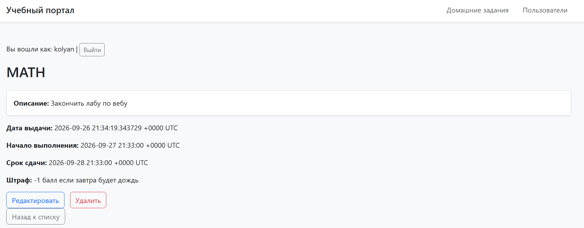
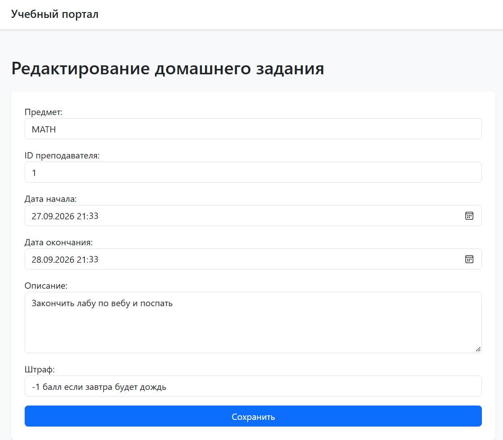
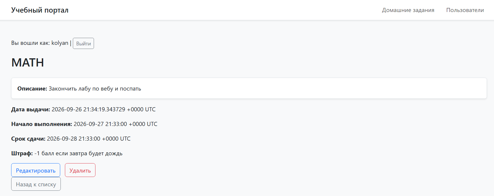
Удаление домашнего задания¶
При GET /homework/{id}/delete показывается подтверждение. Само удаление выполняется только после отправки формы POST:
err = v.repo.Delete(r.Context(), id)
http.Redirect(w, r, "/homeworks", http.StatusSeeOther)
В репозитории вызывается Delete(&Homework{}, id). После этого показывается список.
пробуем удалить задание, которое кто-то сдал
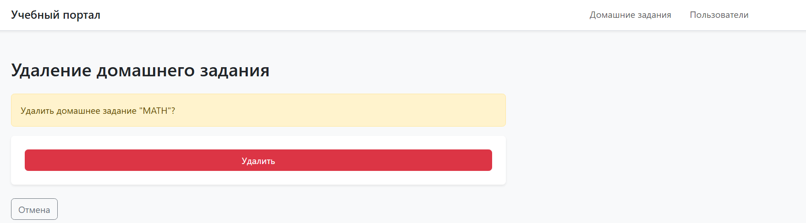
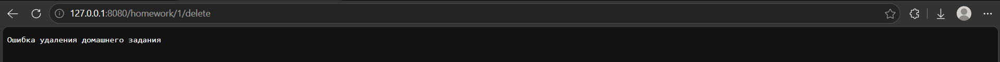
теперь пробуем удалить задание, которое никто не сдал
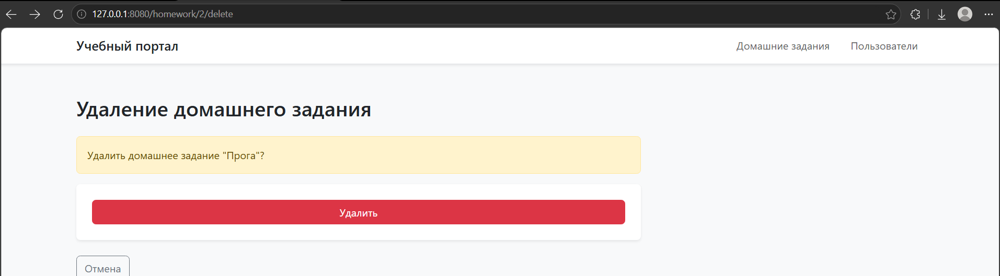
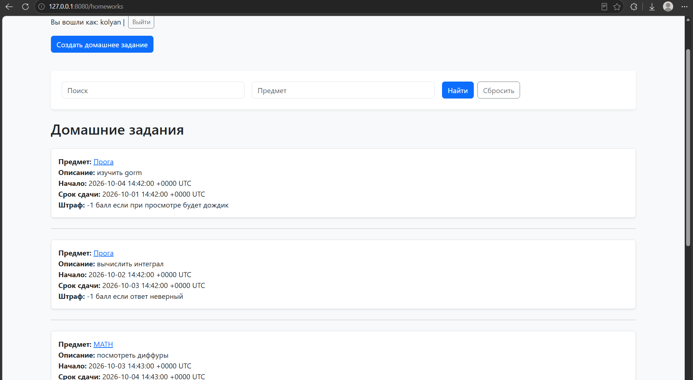
Создание сдачи имеет вид
submission := Submission{
StudentID: studentID,
HomeworkID: homeworkID,
Text: text,
SubmittedAt: time.Now(),
Grade: nil,
}
Время сдачи задаётся сервером, оценка при создании отсутствует. Сейчас форма доступна администратору по /admin/submissions/create.
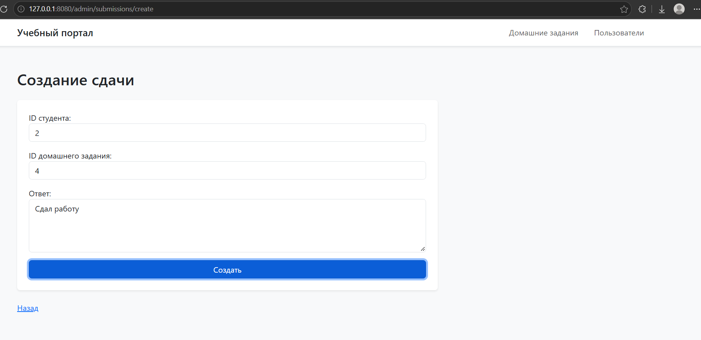
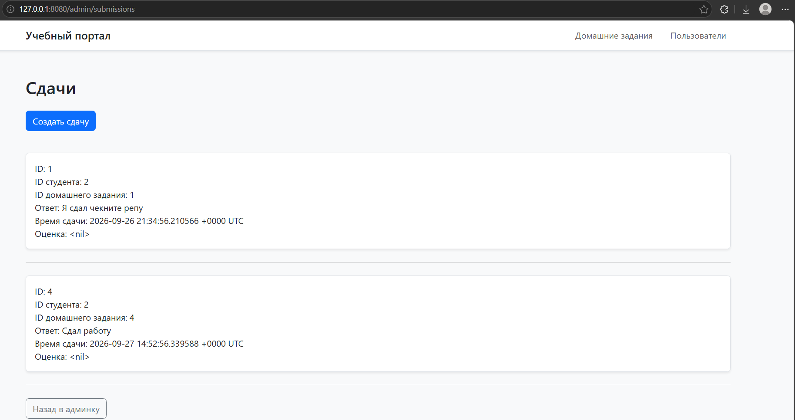
Практика 2.3. Расширение пользователя¶
В этой практике нужно добавить номер паспорта, домашний адрес и национальность, вывести их в админке и реализовать форму создания пользователя с новыми атрибутами.
Новые поля модели¶
В структуру User добавлены:
PassportNumber string
HomeAddress string
Nationality string
В Django для этого в методичке предлагается наследование от AbstractUser. Здесь модель пользователя изначально своя, поэтому поля добавляются в структуру.
Изменение таблицы¶
Миграция 002_extend_users.up.sql дополняет существующую таблицу:
ALTER TABLE users
ADD COLUMN passport_number TEXT,
ADD COLUMN home_address TEXT,
ADD COLUMN nationality TEXT;
Чтение новых полей из формы¶
В UserView.Create и AdminView.CreateUser добавлены одинаковые строки:
passportNumber := r.FormValue("passport_number")
homeAddress := r.FormValue("home_address")
nationality := r.FormValue("nationality")
Затем значения попадают в создаваемого пользователя:
PassportNumber: passportNumber,
HomeAddress: homeAddress,
Nationality: nationality,
Вывод пользователя¶
В обычном списке /users и в /admin/users добавлены выражения:
Номер паспорта: {{ .PassportNumber }}<br>
Домашний адрес: {{ .HomeAddress }}<br>
Национальность: {{ .Nationality }}
Обычная форма находится по /users/create, административная по /admin/users/create. Обе передают три дополнительных поля. В административной форме также можно задать is_admin.
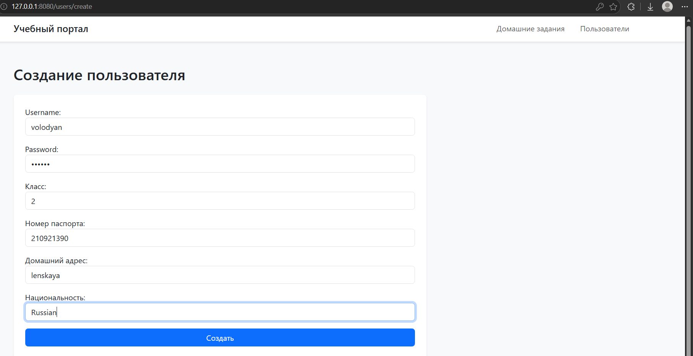
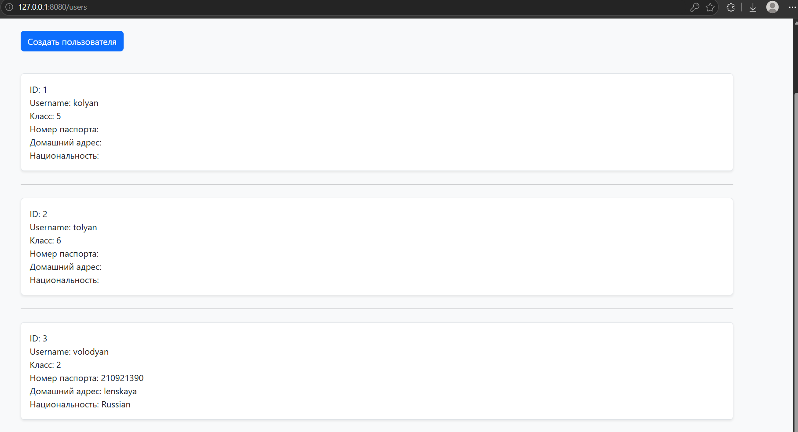
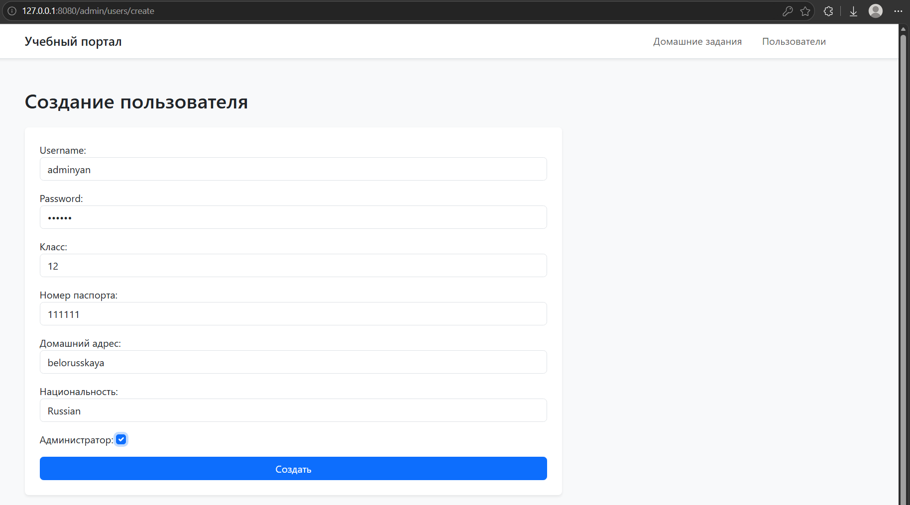
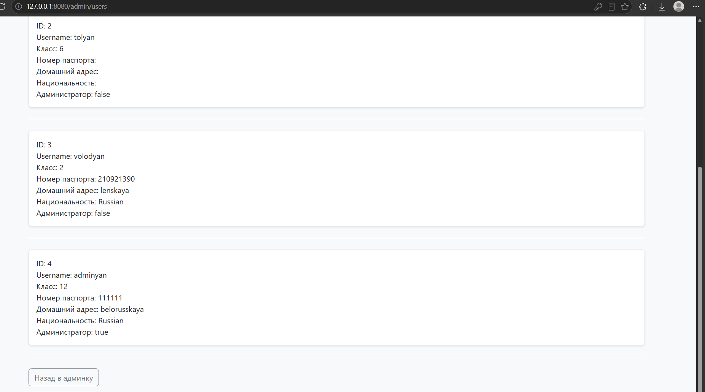
Авторизация и разделение прав¶
Вход и сессия¶
GET /login показывает форму. POST читает username и password, ищет пользователя и проверяет пароль.
После успешной проверки создаётся идентификатор сессии:
bytes := make([]byte, 32)
_, err := rand.Read(bytes)
sessionID := hex.EncodeToString(bytes)
В памяти сервера хранится соответствие:
sessions map[string]int64
Ключ
случайный идентификатор сессии, значение ID пользователя. это напоминает словарь Python. Доступ к общей map защищён sync.RWMutex, потому что HTTP-запросы могут обрабатываться одновременно.
Браузеру отправляется cookie:
http.SetCookie(w, &http.Cookie{
Name: "session_id",
Value: sessionID,
Path: "/",
HttpOnly: true,
SameSite: http.SameSiteLaxMode,
})
В следующих запросах браузер передаёт cookie обратно. CurrentUser находит сессию, получает ID и загружает пользователя из БД. После перезапуска сервера карта сессий пустая, поэтому потребуется новый вход.
Несмотря на имя PasswordHash, текущая версия сохраняет пароль без хэширования и сравнивает строки.
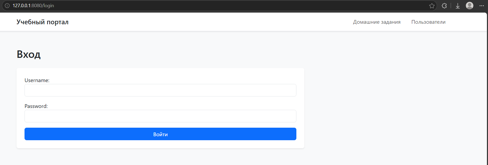
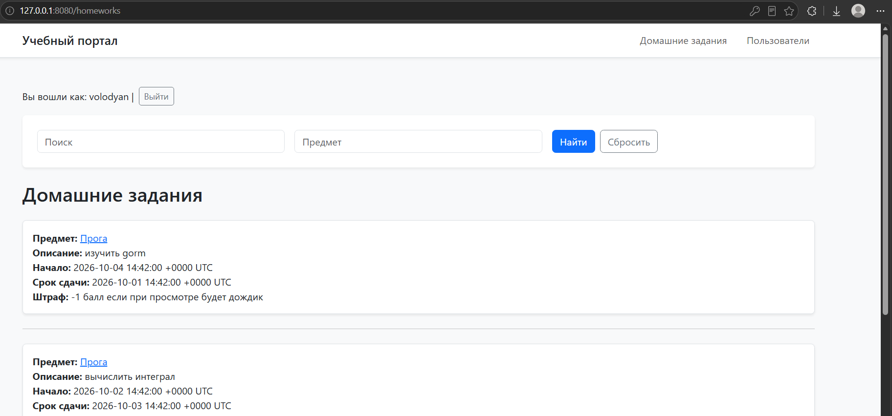
Проверка на сервере¶
Изменение заданий и административные страницы подключены через RequireAdmin:
mux.HandleFunc("POST /homeworks/create", auth.RequireAdmin(homeworkView.Create))
RequireAdmin возвращает новый обработчик, который сначала проверяет сессию и роль.
if !user.IsAdmin {
http.Error(w, "Доступ запрещен", http.StatusForbidden)
return
}
next(w, r)
Если сессии нет, браузер перенаправляется на /login. Если пользователь вошёл, но не является администратором, возвращается 403. Только после проверки вызывается исходный обработчик.
Проверка в шаблоне¶
Кнопки редактирования и удаления показываются по условию:
{{ if .User.IsAdmin }}
<a href="/homework/{{ .Homework.ID }}/update">Редактировать</a>
<a href="/homework/{{ .Homework.ID }}/delete">Удалить</a>
{{ end }}
В списке аналогично показывается кнопка создания. Это выполняет клиентскую часть разграничения прав из задания. При этом ручной переход по адресу дополнительно защищён серверным обработчиком.
Выход удаляет сессию из map, отправляет cookie с MaxAge: -1 и перенаправляет на /login.
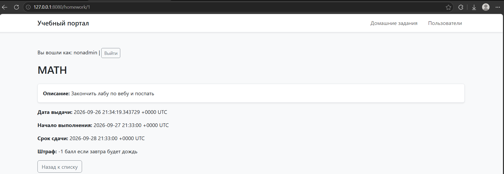
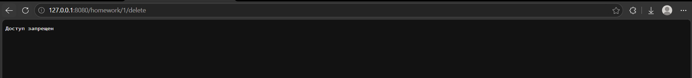
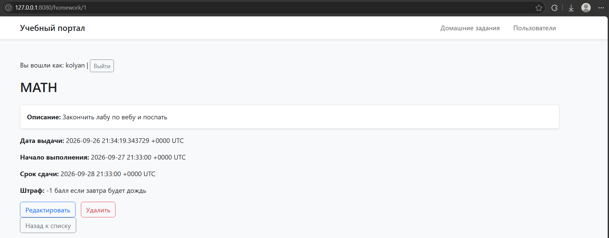
Пагинация, поиск и фильтрация¶
Пагинация¶
В HomeworkView.List на одной странице показывается до пяти заданий:
const limit = 5
pageStr := r.URL.Query().Get("page")
Если page не передан, некорректен или меньше единицы, используется первая страница. Количество страниц и смещение вычисляются так:
totalPages := int((count + int64(limit) - 1) / int64(limit))
offset := (page - 1) * limit
Например, для 12 записей получаются три страницы. На второй странице offset = 5: первые пять записей пропускаются. Если результатов нет, код оставляет одну пустую страницу. Если запрошенная страница больше последней, используется последняя.
В GORM применяются:
query.Limit(limit).Offset(offset).Find(&homeworks)
В шаблон также передаются HasPrev, HasNext, PrevPage, NextPage, Page и TotalPages. По ним показываются ссылки «Предыдущая» и «Следующая».
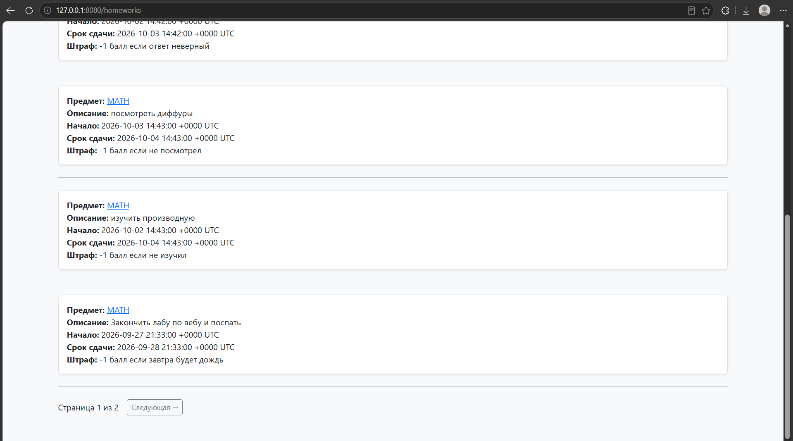
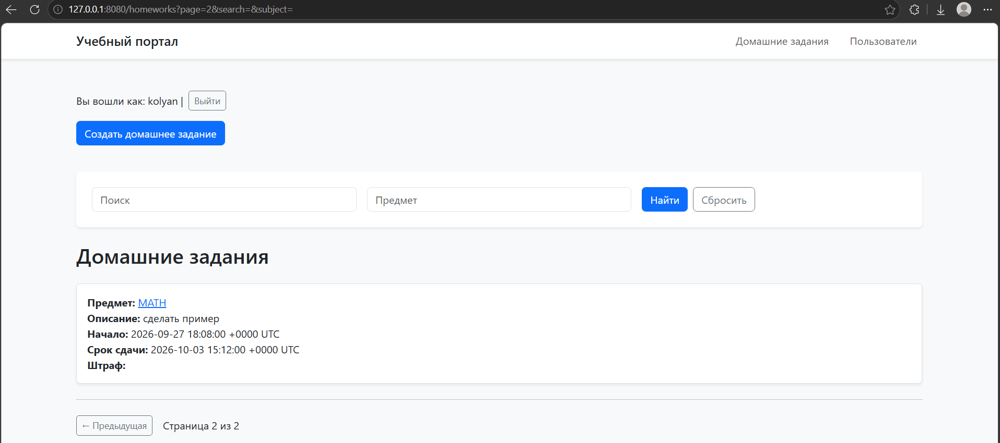
Поиск и фильтр¶
Параметры читаются из URL:
search := r.URL.Query().Get("search")
subject := r.URL.Query().Get("subject")
Поиск проверяет предмет и текст задания:
searchValue := "%" + search + "%"
query = query.Where(
"subject ILIKE ? OR text ILIKE ?",
searchValue,
searchValue,
)
ILIKE в PostgreSQL выполняет сравнение без учёта регистра. Знаки % ищет подтекст строки. Значения передаются параметрами на места ?.
Фильтр по предмету использует точное совпадение:
query = query.Where("subject = ?", subject)
Примеры адресов:
/homeworks?search=интеграл
/homeworks?subject=Математика
/homeworks?search=интеграл&subject=Математика&page=2
Методы CountFiltered и GetPageFiltered используют одинаковые условия. Первый считает подходящие записи, второй возвращает только нужную страницу. Это нужно, чтобы число страниц совпадало с результатом фильтрации.
Сохранение параметров при переходе¶
В ссылку следующей страницы включены оба поля фильтра:
<a href="/homeworks?page={{ .NextPage }}&search={{ .Search }}&subject={{ .Subject }}">
Следующая →
</a>
Поэтому переход не сбрасывает поиск. Кнопка Сбросить ведёт на /homeworks без параметров.
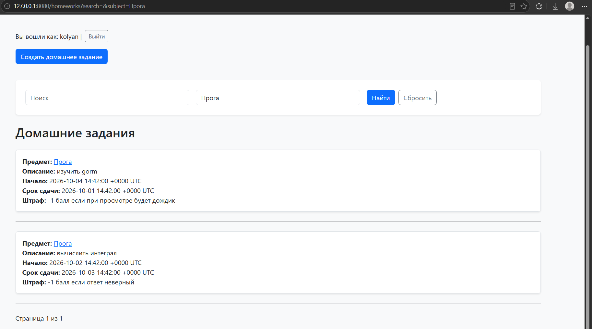
Оформление и реализованные интерфейсы¶
В каждый HTML-шаблон подключён Bootstrap 5.3.8 через CDN.
Ниже перечислены все страницы. В колонке «Доступ» указан доступ по текущим маршрутам, а не только наличие ссылки в меню.
| Адрес | Шаблон в web/templates/ |
Что показывает или делает | Доступ |
|---|---|---|---|
/login |
login.html |
Вход | Публичный |
/users |
users.html |
Список пользователей и новых атрибутов | Публичный |
/users/create |
user_create.html |
Создание обычного пользователя | Публичный |
/homeworks |
homeworks.html |
Список, поиск, фильтр, страницы | Публичный; кнопка создания для администратора |
/homework/{id} |
homework.html |
Карточка задания | Публичный; кнопки изменения для администратора |
/homeworks/create |
homework_create.html |
Создание задания | Администратор |
/homework/{id}/update |
homework_update.html |
Обновление задания | Администратор |
/homework/{id}/delete |
homework_delete.html |
Подтверждение и удаление | Администратор |
/admin |
admin/index.html |
Разделы панели администратора | Администратор |
/admin/users |
admin/users.html |
Список пользователей с ролью | Администратор |
/admin/users/create |
admin/user_create.html |
Создание пользователя с выбором роли | Администратор |
/admin/homeworks |
admin/homeworks.html |
Поля всех домашних заданий | Администратор |
/admin/homeworks/create |
admin/homework_create.html |
Административная форма задания | Администратор |
/admin/submissions |
admin/submissions.html |
Список сдач | Администратор |
/admin/submissions/create |
admin/submission_create.html |
Создание сдачи | Администратор |
У /logout своего шаблона нет: обработчик завершает сессию и перенаправляет на /login.